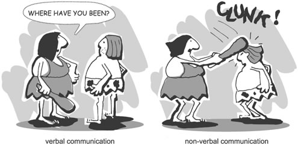

What is Interpersonal Communication?
By: Jocelyn Tran
|
Interpersonal Communication is a dynamic form of communication between 2 people
in which the messages exchanged significantly influence their thoughts, emotions, behaviors
& relationships. Relationship are formed and maintained through communication. Interpersonal communication, however,
delves deeper into the communication between two or more people. It's a form of communication
that involves a deeper connection between groups of people.
When we communicate with another person or group, we have 3 underlying interpersonal
goals that we are trying to accomplish. The three goals are:
- Self-Presentation Goals: Shaking a teacher's hand after the first class to show
ambition (the desire to be viewed positively or negatively)
- Intrumental Goals : Communication in a way to gain something physically
- Relationship Goals: Communication to gain, maintain, or end a relationship
There are six qualities or skills that can identify how competent you are in Interpersonal
Communication. The six qualities are:
- Appropriate- The ability to uphold the expectations for a given situation by behaving
in ways other people expect of you.
- Effective - The ability to achieve the objectives you have for a conversation.
- Adaptable - The ability to change behaviors and goals to meet the needs of the interaction,
also know as flexibility.
- Conversational Involvement - The ability to become cogitively engaged in the conversation
and demonstrate engagement through interaction behaviors like head nods, vocal cues, etc.
- Conversational Management- The eability to regulate conversation throught controlling
the topic, adjusting to a change in topic, interuupting, and asking questions.
- Empathy - The ability too show your conversational partner that you understand his/her
situation or that you share his/her emotional reactions to the situation.
|
Here is a
link that will take you to a page that allows you to assess what your strongest
and weakest communication skills are.
Types of Communication
There are two types of communication: verbal and nonverbal communication. Verbal communication is
an exchange of spoken or written language with others during interactions. Nonverbal communication is a message transmission through non-spoken physcial and behavioral cues. It has more channels,
is more ambiguous, has less rules, and has more meaning.About 60-93% of all interractions
cross culturally are nonverbal.

Culture also affects how people communicate and perceive themselves and others. Culture is
an established, coherent set of beliefs , attitudes, values, and practices shared by a large group
of people.